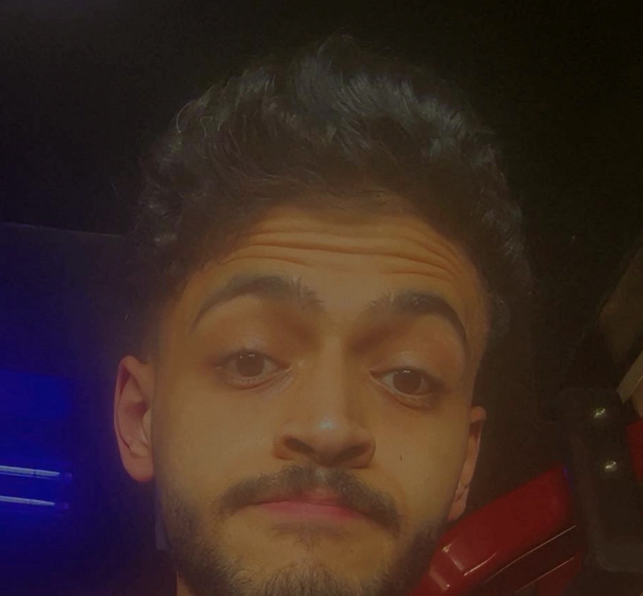

<!doctype html>
<html><head><meta charset="utf-8">
<link rel="stylesheet" href="fonts.css">
<style>
:root{--bg:#070b14;--grid:rgba(120,150,200,.13);--ink:#e9f1ff;--or:#ff7a4a;--or2:#ffb08f;--dim:#8a9bb8;--navy:#1d2140;--peach:#f2875f}
*{margin:0;padding:0;box-sizing:border-box}
html,body{width:1920px;height:1080px;overflow:hidden;background:var(--bg)}
#stage{position:absolute;inset:0;overflow:hidden;font-family:Inter,sans-serif;color:var(--ink)}
.abs{position:absolute}
.grid{position:absolute;inset:-200px;background-image:linear-gradient(var(--grid) 1px,transparent 1px),linear-gradient(90deg,var(--grid) 1px,transparent 1px);background-size:80px 80px}
.big{font-family:'Archivo Black',sans-serif;letter-spacing:.01em;line-height:.95}
.mono{font-family:'JetBrains Mono',monospace}
.glow{text-shadow:0 0 18px rgba(170,200,255,.55),0 0 50px rgba(120,160,255,.25)}
.oglow{text-shadow:0 0 18px rgba(255,120,70,.7),0 0 60px rgba(255,100,50,.35)}
.lbl{font-family:'JetBrains Mono',monospace;font-size:15px;color:var(--dim);letter-spacing:.12em}
.box{border:1.5px solid rgba(200,215,240,.55);background:rgba(10,16,30,.7)}
.vig{position:absolute;inset:0;background:radial-gradient(ellipse at center,transparent 45%,rgba(0,0,0,.65));pointer-events:none}
</style></head>
<body><div id="stage"></div>
<script>
const W=1920,H=1080,FPS=30,DUR=32;
const C=(x,a=0,b=1)=>Math.min(b,Math.max(a,x));
const seg=(t,a,b)=>C((t-a)/(b-a));
const eo=x=>1-Math.pow(1-x,3), eio=x=>x<.5?4*x*x*x:1-Math.pow(-2*x+2,3)/2;
const L=(a,b,x)=>a+(b-a)*x;
function rnd(n){const x=Math.sin(n*127.1+311.7)*43758.5453;return x-Math.floor(x)}

// reveal text char by char; fresh chars are orange, settle to white
function typed(text,t,t0,cps,opts={}){
  const n=Math.floor(Math.max(0,t-t0)*cps);let s='';
  for(let i=0;i<Math.min(n,text.length);i++){
    const age=(t-t0)-i/cps,ch=text[i]===' '?' ':text[i].replace('<','&lt;');
    const k=C(age/(opts.settle||.45));
    const col=opts.keep&&opts.keep(i)?'var(--or)':`rgb(${L(255,233,k)},${L(122,241,k)},${L(74,255,k)})`;
    s+=`<span style="color:${col}">${ch}</span>`;
  }
  const done=n>=text.length;
  if(opts.cursor&&(!done||Math.floor(t*2.2)%2==0))s+=`<span style="color:var(--or)">|</span>`;
  return s;
}
// word-by-word highlight: words reveal, current word orange
function words(text,t,t0,wps){
  const ws=text.split(' ');return ws.map((w,i)=>{
    const a=t-(t0+i/wps);if(a<0)return `<span style="opacity:.0">${w}</span>`;
    const k=C(a/.35);
    return `<span style="opacity:${C(a/.12)};color:rgb(${L(255,233,k)},${L(122,241,k)},${L(74,255,k)})">${w}</span>`
  }).join(' ');
}
function glitch(t,a,b,amt=40){
  if(t<a||t>b)return '';
  const f=Math.floor(t*30),k=Math.sin(seg(t,a,b)*Math.PI);
  const dx=(rnd(f)-.5)*amt*k;
  return `transform:translateX(${dx}px) skewX(${(rnd(f+3)-.5)*12*k}deg);filter:blur(${k*2}px);text-shadow:${-8*k}px 0 rgba(255,60,60,.8),${8*k}px 0 rgba(60,200,255,.8);`;
}
function corners(){return `<div class="lbl abs" style="left:60px;top:40px">CL-MG // SEQ_01</div><div class="lbl abs" style="right:60px;top:40px">${tc}</div>`}
let tc='';

function render(t){
  tc=`00:${String(Math.floor(t)).padStart(2,'0')} / 00:32`;
  let h='';
  // ---------- S1: What if I told you (0 - 1.7)
  if(t<1.9){
    const fade=1-seg(t,1.5,1.9);
    const txt='What if I told you...';
    const lp=seg(t,.1,1.3);
    h+=`<div class="abs" style="left:0;top:0;width:100%;height:100%;opacity:${fade};transform:translateY(${-seg(t,1.5,1.9)*220}px)">
      <div class="lbl abs" style="right:80px;top:60px;color:#cfd8ea">${tc}</div>
      <div class="abs glow" style="left:260px;top:430px;font:300 120px Inter;letter-spacing:.01em;white-space:nowrap">${typed(txt,t,.1,18,{settle:.5})}</div>
      <div class="abs" style="left:260px;top:600px;height:3px;width:${lp*1300}px;background:linear-gradient(90deg,rgba(255,255,255,.2),#fff);box-shadow:0 0 20px #ffb08f"></div>
      <div class="abs" style="left:${260+lp*1300-60}px;top:560px;width:120px;height:80px;background:radial-gradient(circle,rgba(255,170,130,.9),transparent 60%);opacity:${lp<1?1:0}"></div>
      <div class="lbl abs" style="left:260px;top:620px">fig. 1</div></div>`;
  }
  // grid layer for most of the middle
  const gridOp = t<1.6?0: t<9.0? seg(t,1.6,2.2): t<10.0? 0.25 : t<19.0? 1 : 0;
  if(gridOp>0) h=`<div class="grid" style="opacity:${gridOp};transform:translate(${-t*6}px,${-t*3}px)"></div>`+h;

  // ---------- S2: you can create MOTION GRAPHICS (1.6 - 4.1)
  if(t>=1.6&&t<4.2){
    const out=seg(t,3.9,4.2);
    const cx=seg(t,1.6,2.2);
    h+=`<div class="abs" style="inset:0;opacity:${1-out}">
      <div class="abs" style="left:0;top:${L(1080,640,eo(cx))}px;width:100%;height:3px;background:linear-gradient(90deg,transparent,#ff8a5c,transparent);opacity:${1-seg(t,2.4,2.8)};box-shadow:0 0 30px #ff7a4a"></div>
      <div class="abs" style="left:${L(0,300,eo(cx))}px;top:0;width:3px;height:100%;background:linear-gradient(transparent,#ff8a5c,transparent);opacity:${1-seg(t,2.4,2.8)}"></div>
      <div class="abs" style="left:300px;top:250px;font:700 54px Inter">${words('you can create',t,1.7,6)}</div>
      ${t>2.9&&t<3.9?`<div class="abs" style="left:300px;top:${250-seg(t,3.4,3.9)*50}px;font:700 54px Inter;opacity:${.4*(1-seg(t,3.4,3.9))}">you can create</div>`:''}
      <div class="abs big glow" style="left:290px;top:330px;font-size:250px">${letters('MOTION',t,2.2,14)}</div>
      <div class="abs big glow" style="left:300px;top:575px;font-size:210px">${letters('GRAPHICS',t,2.65,16)}</div>
      <div class="abs" style="left:300px;top:${L(800,820,eo(seg(t,2.9,3.4)))}px;width:${seg(t,2.9,3.5)*1340}px;height:2px;background:#fff;opacity:.6"></div>
    </div>`;
  }
  // ---------- S3: without even opening After Effects? (4.0 - 6.4)
  if(t>=4.0&&t<6.5){
    const inn=eo(seg(t,4.0,4.4)),out=seg(t,6.2,6.5);
    const xk=seg(t,5.0,5.6);
    h+=`<div class="abs" style="inset:0;opacity:${inn*(1-out)};transform:scale(${L(1.08,1,inn)+out*.1})">
      <div class="abs" style="left:250px;top:200px;font:700 58px Inter">${words('without even opening',t,4.1,6)}</div>
      ${timeline(t,250,300,1420,420)}
      <svg class="abs" style="left:250px;top:300px" width="1420" height="420"><g stroke="#ff4a3a" stroke-width="6" stroke-linecap="round" style="filter:drop-shadow(0 0 10px #ff5a3a)">
        <line x1="0" y1="0" x2="${1420*eo(seg(t,4.9,5.3))}" y2="${420*eo(seg(t,4.9,5.3))}"/>
        <line x1="1420" y1="0" x2="${1420-1420*eo(seg(t,5.2,5.6))}" y2="${420*eo(seg(t,5.2,5.6))}"/></g></svg>
      <div class="abs big oglow" style="left:250px;top:${L(980,760,eo(seg(t,5.3,5.8)))}px;font-size:170px;color:var(--or);opacity:${seg(t,5.3,5.6)}">After Effects?</div>
    </div>`;
  }
  // ---------- S4: And no — I'm not talking about an After Effects MCP. (6.4 - 9.3)
  if(t>=6.4&&t<9.4){
    const inn=seg(t,6.4,6.7);
    h+=`<div class="abs" style="inset:0;opacity:${inn};${glitch(t,6.4,6.7,80)}${glitch(t,8.9,9.4,120)}">
      <div class="abs big glow" style="left:260px;top:260px;font-size:150px">And <span style="color:${t<7?'var(--or)':'#e9f1ff'}">no</span> <span style="display:inline-block;width:${seg(t,6.8,7.1)*130}px;height:18px;background:#9fd0ff;vertical-align:middle;box-shadow:0 0 20px #7fb8ff"></span></div>
      <div class="lbl abs" style="left:262px;top:450px">fig. 1b — a common misconception</div>
      ${nodes(t,260,490)}
      <div class="abs" style="left:262px;top:760px;font:700 60px Inter">${words("I'm not talking about an After Effects",t,7.25,6)} <span style="color:var(--or);opacity:${seg(t,8.4,8.5)}" class="oglow">MCP.</span></div>
    </div>`;
  }
  // ---------- S5: glitch CLAUDE the model (9.3-10.0)
  if(t>=9.3&&t<10.05){
    h+=`<div class="abs" style="inset:0;display:flex;flex-direction:column;align-items:center;justify-content:center;${glitch(t,9.3,10.05,140)}">
      <div class="mono" style="font-size:90px;letter-spacing:.4em;color:#cfd8ea">CLAUDE</div>
      <div class="mono" style="font-size:34px;color:var(--dim);margin-top:10px">the model</div></div>`;
  }
  // ---------- S6: This is CLAUDE OPUS 5.5 (10.0 - 12.9)
  if(t>=10.0&&t<12.9){
    const out=seg(t,12.3,12.6);
    const lp=eo(seg(t,10.0,10.5));
    const cl=seg(t,10.55,11.2);
    const ver=t<11.6?'':t<11.85?'5.':t<12.1?String(Math.floor(rnd(Math.floor(t*30))*9))+'.'+Math.floor(rnd(Math.floor(t*30)+1)*9):'5.5';
    h+=`<div class="abs" style="inset:0;opacity:${1-out};transform:scale(${1-out*.08});filter:blur(${out*10}px)">
      <div class="abs" style="left:300px;top:240px;height:3px;width:${lp*1320}px;background:linear-gradient(90deg,#ff7a4a,#ffd0b8);box-shadow:0 0 18px #ff7a4a"></div>
      <div class="abs" style="left:300px;top:270px;font:700 60px Inter">${words('This is',t,10.1,6)}</div>
      <div class="abs big" style="left:290px;top:350px;font-size:270px;opacity:${seg(t,10.5,10.7)};transform:translateY(${(1-eo(cl))*40}px);color:${t<11.3?'var(--or)':'#e9f1ff'}" class="glow"><span class="${t<11.3?'oglow':'glow'}">CLAUDE</span></div>
      <div class="abs big glow" style="left:300px;top:620px;font-size:190px;opacity:${seg(t,11.1,11.3)}">OPUS <span style="color:${t<12.1?'var(--or)':'#e9f1ff'}">${ver}</span></div>
      <div class="abs" style="left:900px;top:820px;height:4px;width:${seg(t,11.6,12.2)*560}px;background:var(--or);box-shadow:0 0 16px var(--or)"></div>
    </div>`;
  }
  // ---------- PHOTO: creator card (12.3 - 13.8)
  if(t>=12.3&&t<13.85){
    const inn=eo(seg(t,12.3,12.75)),rev=eio(seg(t,12.4,12.85)),out=eio(seg(t,13.5,13.85));
    const w=620,hh=w*1020/1100,x=(W-w)/2,y=(H-hh)/2-20;
    const br=(l,tp,r,b)=>`<div class="abs" style="${l}${tp}${r}${b}width:46px;height:46px;border-color:var(--or);border-style:solid;border-width:${tp?'4px':'0'} ${r?'4px':'0'} ${b?'4px':'0'} ${l?'4px':'0'};filter:drop-shadow(0 0 8px var(--or))"></div>`;
    h+=`<div class="abs" style="inset:0;opacity:${1-out};transform:scale(${L(.92,1,inn)+out*.12});filter:blur(${out*8}px)">
      <div class="abs" style="left:${x-120}px;top:${y-120}px;width:${w+240}px;height:${hh+240}px;background:radial-gradient(ellipse,rgba(255,122,74,.35),transparent 65%);opacity:${inn}"></div>
      <div class="abs" style="left:${x}px;top:${y}px;width:${w}px;height:${hh}px;border-radius:22px;overflow:hidden;clip-path:inset(0 0 ${100-rev*100}% 0 round 22px);box-shadow:0 0 0 2px rgba(255,180,150,.7),0 30px 80px rgba(0,0,0,.6)">
        
        <div class="abs" style="left:0;right:0;top:${rev*100}%;height:4px;margin-top:-4px;background:#fff;box-shadow:0 0 24px 6px var(--or);opacity:${rev<1?1:0}"></div>
      </div>
      <div class="abs" style="left:${x-24}px;top:${y-24}px;width:${w+48}px;height:${hh+48}px;opacity:${seg(t,12.6,12.8)}">
        ${br('left:0;','top:0;','','')}${br('','top:0;','right:0;','')}${br('left:0;','','','bottom:0;')}${br('','','right:0;','bottom:0;')}</div>
      <div class="lbl abs" style="left:${x}px;top:${y+hh+40}px;opacity:${seg(t,12.75,12.95)}">fig. 2 — made with claude</div>
      <div class="lbl abs" style="left:${x+w-140}px;top:${y+hh+40}px;color:var(--or);opacity:${seg(t,12.75,12.95)}">● REC</div>
    </div>`;
  }
  // ---------- S7: Instead of controlling After Effects, (12.9 - 15.6)
  if(t>=13.55&&t<15.7){
    const inn=seg(t,13.55,13.85);
    const slide=eio(seg(t,15.1,15.7));
    h+=`<div class="abs" style="inset:0;opacity:${inn};transform:translateX(${-slide*700}px);filter:blur(${slide*8}px)">
      <div class="abs" style="left:420px;top:180px;font:700 70px Inter;line-height:1.15">${words('Instead of controlling',t,13.6,7)}<br>${words('After Effects,',t,14.05,6)}</div>
      ${graph(t,420,380,1080,520)}</div>`;
  }
  // ---------- S8: you basically tell Claude what you want the animation to look like (15.2 - 19.0)
  if(t>=15.2&&t<19.0){
    const inn=eo(seg(t,15.2,15.7)),out=seg(t,18.7,19.0);
    h+=`<div class="abs" style="inset:0;opacity:${inn*(1-out)};transform:translateX(${(1-inn)*500}px)">
      <div class="abs" style="left:520px;top:220px;font:700 76px Inter;line-height:1.12">${words('you basically',t,15.3,6)}<br>${words('tell Claude',t,15.75,5)}</div>
      <div class="lbl abs" style="left:522px;top:410px;opacity:${seg(t,16,16.3)}">PROMPT &nbsp;&nbsp;→&nbsp;&nbsp; TO: CLAUDE</div>
      <div class="abs box" style="left:520px;top:445px;width:${L(0,920,eo(seg(t,15.9,16.4)))}px;height:240px;box-shadow:0 0 50px rgba(255,120,70,.12)">
        <div class="abs" style="left:28px;top:44px;width:14px;height:14px;border-radius:50%;background:#fff;box-shadow:0 0 20px 6px rgba(255,140,100,.8)"></div>
        <div class="abs mono" style="left:70px;top:28px;width:820px;font-size:40px;line-height:1.6;white-space:normal">${typed('what you want the animation to look like.',t,16.4,22,{cursor:true})}</div>
        <div class="lbl abs" style="right:14px;bottom:8px;font-size:12px">chars: ${Math.min(41,Math.max(0,Math.floor((t-16.4)*22)))} / ∞</div>
      </div></div>`;
  }
  // ---------- S9/S10: For example: + prompt typing with camera (18.9 - 29.2)
  if(t>=18.9&&t<29.25){
    h+=prompt(t);
  }
  // ---------- S11: AND THIS IS WHERE IT GETS CRAZY (29.2 - 32)
  if(t>=29.2){
    const ws=[['AND',29.2],['THIS',29.65],['IS',30.0],['WHERE',30.25],['IT',30.62],['GETS',30.82],['CRAZY.',31.2]];
    let cur=ws[0];for(const w of ws)if(t>=w[1])cur=w;
    const a=t-cur[1];const k=eo(C(a/.18));
    const isC=cur[0]==='CRAZY.';
    const txt=isC?cur[0].split('').map((c,i)=>`<span style="display:inline-block;opacity:${C((a-i*.05)/.08)};filter:blur(${(1-C((a-i*.05)/.12))*14}px);transform:translateX(${(1-eo(C((a-i*.05)/.15)))*-80}px)">${c}</span>`).join(''):cur[0];
    const fl=seg(t,29.2,29.32);
    h+=`<div class="abs" style="inset:0;background:var(--peach)"></div>
      <div class="abs" style="inset:0;background:#fff;opacity:${1-fl}"></div>
      <div class="lbl abs" style="left:60px;top:40px;color:rgba(29,33,64,.45)">CL-MG // SEQ_01 — END</div>
      <div class="abs big" style="inset:0;display:flex;align-items:center;justify-content:center;font-size:${isC?300:340}px;color:var(--navy);
        transform:scale(${isC?1+ (t-31.2)*.06:L(1.25,1,k)}) translateY(${isC?0:(1-k)*30}px);filter:blur(${isC?0:(1-k)*12}px);opacity:${isC?1:k}">${txt}</div>`;
  }
  h+=`<div class="vig"></div>`;
  document.getElementById('stage').innerHTML=h;
}

function letters(word,t,t0,lps){
  return word.split('').map((c,i)=>{
    const a=t-(t0+i/lps);const k=C(a/.3),o=C(a/.08);
    return `<span style="opacity:${o};display:inline-block;transform:translateY(${(1-eo(C(a/.25)))*50}px);color:rgb(${L(255,233,k)},${L(122,241,k)},${L(74,255,k)})">${c}</span>`;
  }).join('');
}
function timeline(t,x,y,w,hh){
  const rows=['TEXT 01','SHAPE 02','SHAPE 03','CAMERA','NULL 04','ADJUST 05'];
  const ph=seg(t,4.2,6.2);
  let s=`<div class="abs box" style="left:${x}px;top:${y}px;width:${w}px;height:${hh}px">
   <div class="lbl abs" style="left:16px;top:10px;font-size:12px">TIMELINE</div><div class="lbl abs" style="right:16px;top:10px;font-size:12px">fps 30 · 1920×1080</div>`;
  for(let i=0;i<6;i++){
    const b0=120+rnd(i)*300,bw=500+rnd(i+9)*500;const rk=eo(seg(t,4.2+i*.06,4.7+i*.06));
    s+=`<div class="lbl abs" style="left:16px;top:${55+i*58}px;font-size:13px">${rows[i]}</div>
      <div class="abs" style="left:${170+b0}px;top:${55+i*58}px;width:${bw*rk}px;height:22px;background:linear-gradient(90deg,#7f97c9,#a9bde6);opacity:.85;border-radius:3px"></div>`;
    for(let k=0;k<3;k++)s+=`<div class="abs" style="left:${170+b0+bw*(.15+k*.33)*rk}px;top:${60+i*58}px;width:10px;height:10px;transform:rotate(45deg);background:#fff;opacity:${rk}"></div>`;
  }
  s+=`<div class="abs" style="left:${170+ph*(w-200)}px;top:30px;width:2px;height:${hh-30}px;background:var(--or);box-shadow:0 0 10px var(--or)"></div></div>`;
  return s;
}
function nodes(t,x,y){
  const ns=[['CLAUDE','the model'],['MCP SERVER','remote control'],['AFTER EFFECTS','layers · keyframes']];
  let s='';ns.forEach((n,i)=>{const k=eo(seg(t,6.7+i*.15,7.1+i*.15));
    s+=`<div class="abs box" style="left:${x+i*470}px;top:${y+(1-k)*30}px;width:330px;height:110px;opacity:${k};display:flex;flex-direction:column;align-items:center;justify-content:center">
      <div class="mono" style="font-size:26px;font-weight:600;letter-spacing:.1em">${n[0]}</div><div class="lbl" style="font-size:13px;margin-top:6px">${n[1]}</div></div>`});
  for(let i=0;i<2;i++){const k=seg(t,7.0+i*.15,7.3+i*.15);
    s+=`<div class="abs" style="left:${x+330+i*470}px;top:${y+55}px;width:${140*k}px;height:2px;background:#cbd7ee"></div>`}
  const p=((t-7.2)/1.0)%1;const px=x+330+p*(470+140);
  if(t>7.2)s+=`<div class="abs" style="left:${px-40}px;top:${y+15}px;width:80px;height:80px;background:radial-gradient(circle,rgba(255,170,120,1),rgba(255,110,60,.4) 25%,transparent 60%)"></div>`;
  // cross out the MCP route when "MCP." lands
  const xk=eo(seg(t,8.45,8.75));
  s+=`<svg class="abs" style="left:${x+430}px;top:${y-30}px" width="460" height="170"><g stroke="#ff4a3a" stroke-width="5" style="filter:drop-shadow(0 0 8px #ff4a3a)"><line x1="20" y1="20" x2="${20+420*xk}" y2="${20+130*xk}"/><line x1="440" y1="20" x2="${440-420*xk}" y2="${20+130*xk}"/></g></svg>`;
  return s;
}
function graph(t,x,y,w,hh){
  const k=eio(seg(t,14.2,15.0));
  const p0=[60,hh-60],p3=[w-80,70];
  const c1=[L(250,w*.55,k),L(hh-160,hh-50,k)],c2=[L(w-300,w*.55,k),L(170,70,k)];
  const cur=[c2[0]+8,c2[1]+8];
  return `<div class="abs box" style="left:${x}px;top:${y}px;width:${w}px;height:${hh}px;opacity:${seg(t,13.8,14.1)}">
   <div class="lbl abs" style="left:16px;top:10px;font-size:12px">GRAPH EDITOR</div><div class="lbl abs" style="right:16px;top:10px;font-size:12px">manual adjustments: ${Math.floor(1+k*7)}</div>
   <svg class="abs" style="left:0;top:0" width="${w}" height="${hh}">
    <line x1="60" y1="40" x2="60" y2="${hh-60}" stroke="#55627e"/><line x1="60" y1="${hh-60}" x2="${w-40}" y2="${hh-60}" stroke="#55627e"/>
    <path d="M${p0} C${c1} ${c2} ${p3}" fill="none" stroke="#e9f1ff" stroke-width="3" style="filter:drop-shadow(0 0 6px #9fc4ff)"/>
    <line x1="${p0[0]}" y1="${p0[1]}" x2="${c1[0]}" y2="${c1[1]}" stroke="#ff7a4a" stroke-dasharray="4 5"/><line x1="${p3[0]}" y1="${p3[1]}" x2="${c2[0]}" y2="${c2[1]}" stroke="#ff7a4a" stroke-dasharray="4 5"/>
    <circle cx="${c1[0]}" cy="${c1[1]}" r="7" fill="#ff7a4a"/><circle cx="${c2[0]}" cy="${c2[1]}" r="7" fill="#ff7a4a"/>
    <circle cx="${p0[0]}" cy="${p0[1]}" r="6" fill="#fff"/><circle cx="${p3[0]}" cy="${p3[1]}" r="6" fill="#fff"/>
    <path transform="translate(${cur[0]},${cur[1]})" d="M0 0 L0 30 L8 22 L14 36 L19 34 L13 20 L24 20 Z" fill="#fff" stroke="#000" stroke-width="1.5"/>
   </svg></div>`;
}
function wire(t,cx,cy,s,kind,op){
  const a=t*.9,b=t*.6;
  let V=kind==='cube'?[[-1,-1,-1],[1,-1,-1],[1,1,-1],[-1,1,-1],[-1,-1,1],[1,-1,1],[1,1,1],[-1,1,1]]:[[1,0,0],[-1,0,0],[0,1,0],[0,-1,0],[0,0,1],[0,0,-1]];
  let E=kind==='cube'?[[0,1],[1,2],[2,3],[3,0],[4,5],[5,6],[6,7],[7,4],[0,4],[1,5],[2,6],[3,7]]:[[0,2],[0,3],[0,4],[0,5],[1,2],[1,3],[1,4],[1,5],[2,4],[4,3],[3,5],[5,2]];
  const P=V.map(([x,y,z])=>{let X=x*Math.cos(a)-z*Math.sin(a),Z=x*Math.sin(a)+z*Math.cos(a);let Y=y*Math.cos(b)-Z*Math.sin(b);Z=y*Math.sin(b)+Z*Math.cos(b);const f=4/(4+Z);return[cx+X*s*f,cy+Y*s*f]});
  return `<g opacity="${op}" stroke="#dfe8ff" stroke-width="2" fill="none" style="filter:drop-shadow(0 0 6px #9fc4ff)">${E.map(([i,j])=>`<line x1="${P[i][0]}" y1="${P[i][1]}" x2="${P[j][0]}" y2="${P[j][1]}"/>`).join('')}</g>`;
}
const PROMPT='"Create a 15-second cinematic motion graphics sequence with kinetic typography, smooth shape transitions, 3D elements and seamless camera movement."';
function prompt(t){
  const inn=seg(t,18.9,19.2);
  const t0=20.0, cps=PROMPT.length/7.0; // finish typing by ~27.0
  const n=Math.min(PROMPT.length,Math.max(0,Math.floor((t-t0)*cps)));
  // camera: zoomed on cursor while typing, then pulls back to reveal 3D elements
  const pull=eio(seg(t,26.6,27.8));
  const line=Math.floor(n/48);
  const zoom=L(1.35,1,pull);
  const fc=Math.max(0,(t-t0)*cps), cl=Math.min(fc,PROMPT.length)/51, li=Math.floor(cl), fr=cl-li;
  const cxp=370+fr*1240, cyp=300+li*70;
  const camX=L(.55*(1000-960-(cxp-960)*zoom),0,pull), camY=L(.8*(500-486-(cyp-486)*zoom),0,pull);
  const rotY=L(-14+Math.sin(t*.7)*4,-4,pull), rotX=L(10,6,pull);
  const rows=[['pl_root',`${(t*1.3).toFixed(2)}`,'ease'],['kinetic',`${(t*.7%3).toFixed(2)}`,'spring'],['camera',`${(2+Math.sin(t)).toFixed(2)}`,'bezier'],['shape_tr',`${(t%2).toFixed(2)}`,'linear']];
  const ex=seg(t,28.9,29.25);
  return `<div class="abs" style="inset:0;opacity:${inn}">
    <div class="abs" style="left:-50%;width:200%;top:560px;height:900px;background-image:linear-gradient(rgba(110,140,200,.35) 2px,transparent 2px),linear-gradient(90deg,rgba(110,140,200,.35) 2px,transparent 2px);background-size:90px 90px;background-position:${-t*40}px ${t*60}px;transform:perspective(600px) rotateX(70deg);transform-origin:top;-webkit-mask-image:linear-gradient(transparent,#000 40%)"></div>
    <div class="abs" style="inset:0;transform:perspective(1600px) translate(${camX}px,${camY}px) scale(${zoom}) rotateY(${rotY}deg) rotateX(${rotX}deg);transform-origin:50% 45%;${glitch(t,19.75,20.05,90)}${glitch(t,28.85,29.25,160)}">
      <div class="abs" style="left:300px;top:260px;font:700 64px Inter;opacity:${1-seg(t,19.7,19.9)}">${words('For example:',t,19.0,5)}</div>
      <div class="abs" style="left:280px;top:${L(370,250,seg(t,19.8,20.1))}px;width:1360px;height:${t<20?120:430}px;border-left:2px solid rgba(200,215,240,.5);border-bottom:2px solid rgba(200,215,240,.25)"></div>
      <div class="abs mono" style="left:310px;top:${t<20?390:280}px;font-size:38px;color:#cfd8ea">${t<20?'›':'»'}</div>
      <div class="abs mono glow" style="left:370px;top:270px;width:1240px;font-size:40px;font-weight:600;line-height:1.75;word-break:normal">${typed(PROMPT,t,t0,cps,{cursor:true,settle:.6})}</div>
      <div class="abs" style="left:1100px;top:600px;width:380px;opacity:${seg(t,20.2,20.5)*(1-pull*.6)}">
        <div style="height:6px;background:var(--or);margin-bottom:6px;box-shadow:0 0 10px var(--or)"></div>
        ${rows.map(r=>`<div class="lbl" style="display:flex;justify-content:space-between;font-size:12px;line-height:20px"><span>${r[0]}</span><span>${r[2]}</span><span>${r[1]}</span></div>`).join('')}
      </div>
      <div class="lbl abs" style="left:300px;top:690px">tokens ${n} · model: claude · status ${n<PROMPT.length?'typing':'ready ↵'}</div>
    </div>
    <svg class="abs" style="left:0;top:0" width="1920" height="1080">${wire(t,1150,200,120,'cube',seg(t,26.9,27.5)*(1-ex))}${wire(t,1560,260,110,'oct',seg(t,27.1,27.7)*(1-ex))}
      <circle cx="1760" cy="560" r="${90}" stroke="#dfe8ff" stroke-width="2" fill="none" opacity="${seg(t,27.3,27.8)*.6*(1-ex)}"/></svg>
    <div class="abs" style="left:380px;top:120px;font:300 italic 90px Inter;color:#cfd8ea;opacity:${seg(t,27.2,27.6)*(1-ex)};letter-spacing:-.02em;transform:skewX(-8deg)">kinetic</div>
  </div>`;
}
window.render=render;window.DUR=DUR;window.FPS=FPS;
render(0);
</script></body></html>
